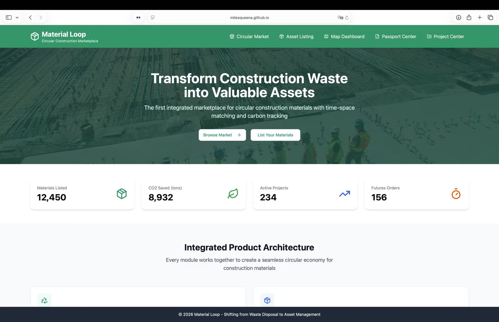

Material Loop
A marketplace concept for reusing construction materials.
Open the product prototype ↗If the prototype opens on its 404 screen, choose Back to Home to enter the marketplace.

A material’s timing matters
The concept brings availability and project timing into the same browsing experience so buyers can consider when a recovered material could fit their work.
Compare a listing with a project’s schedule
The market organizes current inventory, future availability, and dismantling opportunities. A project dashboard brings pickup timing and logistics into the same decision.
Give every material a record
A material passport gathers provenance, quality documents, and carbon-related fields. The demo uses illustrative data to show what a buyer could review before committing.